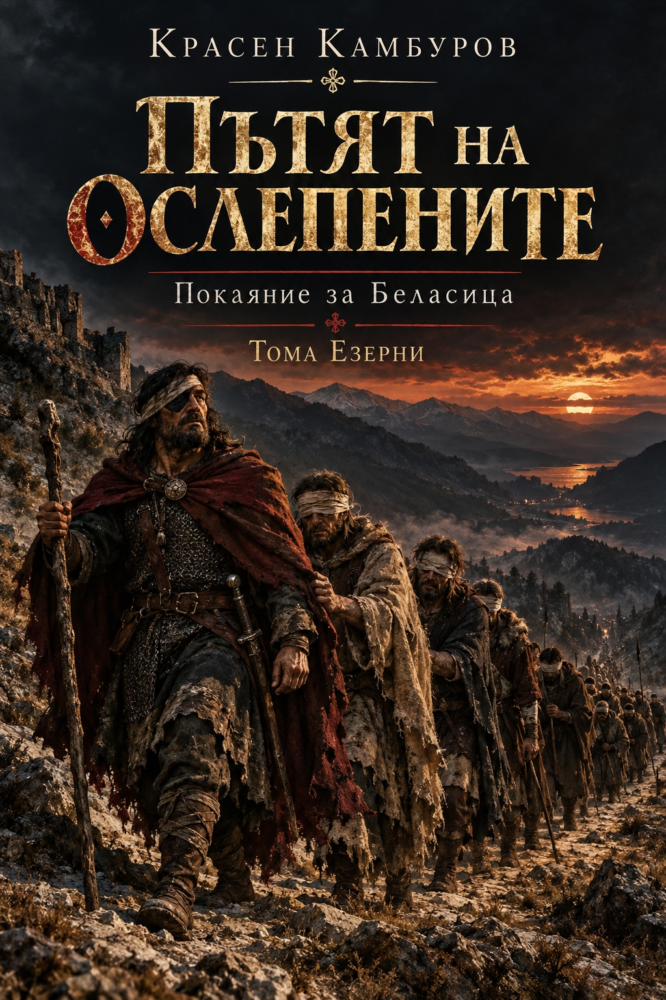
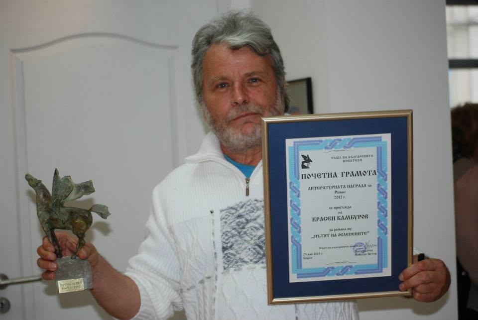
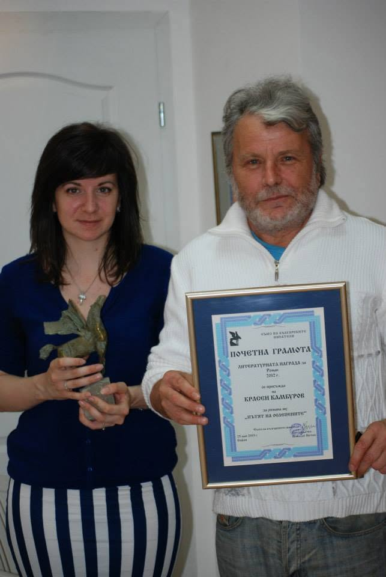

Тридесет митични свитъка
Първата част е изградена като тридесет митични свитъка на Тома Езерни от XI век. Стиховият разказ следва ослепените и превръща тяхното скиталчество в литературна памет за Беласица.
Покаяние за Беласица
Роман за паметта след Беласица, за пътя на ослепените български воини и за начина, по който една историческа травма продължава да разговаря със съвремието.

Историческата памет е разказана в две различни времена и два различни гласа.
Първата част е изградена като тридесет митични свитъка на Тома Езерни от XI век. Стиховият разказ следва ослепените и превръща тяхното скиталчество в литературна памет за Беласица.
Втората част съдържа седем приписки от XXI век. Красен Камбуров коментира свитъците, прескача между вековете и разгръща историческото събитие като въпрос за паметта, историята и българската съдба.
„Но спомни си нявга народе
спомни си за нас
и за жребия дето ни сепна
Амин.“ Из „Пътят на ослепените“
„Пътят на ослепените“ е отличен с годишната литературна награда на Съюза на българските писатели за роман за 2012 г.
Наградата е връчена на официална церемония на 23 май 2013 г. Снимките запазват момента, в който книгата получава своето най-важно литературно отличие.
Четиринадесет години след първото издание романът се връща към читателите като свободно електронно издание.


Историческото събитие отново влиза в обществената памет през 2026 г.

На 3 октомври 2026 г. тленните останки на цар Самуил бяха посрещнати в София и положени в базиликата „Света София“. Събитието отново постави в общественото внимание Самуиловата епоха и паметта за Беласица.
Това стана повод „Пътят на ослепените“ да тръгне отново към читателите — този път без ограничението на малкия печатен тираж и в свободно електронно издание.
Първоначалната графика на сайта е запазена тук като отделен визуален мотив, различен от официалната корица на второто издание.
Подбрана библиография по жанрове, съставена по публикуваната справка в българската Уикипедия.
Списъкът по-долу следва категориите в библиографичната справка и включва публикуваните там заглавия. За част от поетичните книги годината не е посочена в източника.
Второто издание е публикувано за свободно електронно четене в два формата — PDF и EPUB.
Текстът е възпроизведен по авторския файл при запазване на композиционната логика. Изданието има нова корица и самостоятелно оформление, различни от първото печатно издание.